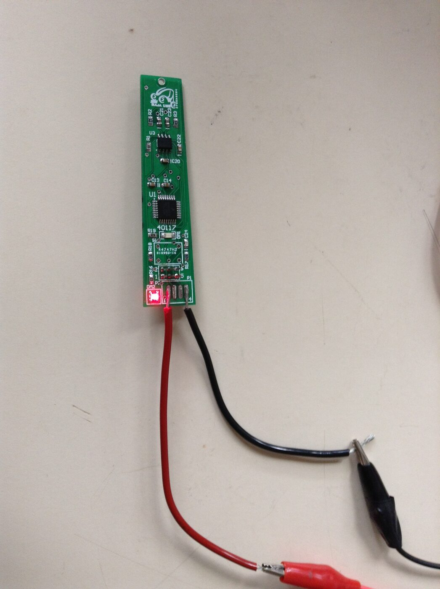
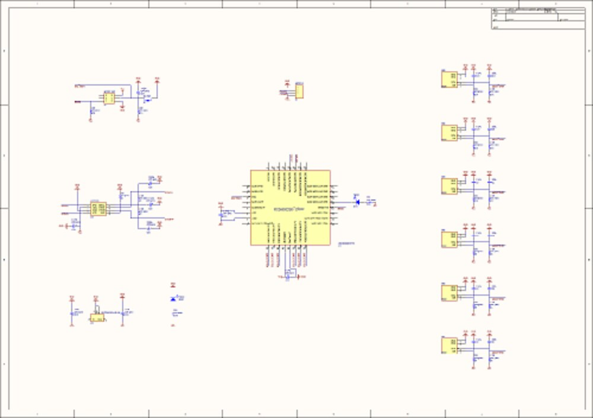

Fuel-Level Module
A CAN‑bus fuel‑level sender for the off‑road cars built by the Baja SAE team of Universidad Simón Bolívar ("Baja USB"). A magnet riding on the fuel‑tank float passes a vertical row of six Hall‑effect switches; a Freescale S08 microcontroller turns that into an 11‑step “how much fuel is left” reading and broadcasts it on the car's CAN bus, where the dashboard and on‑board data system pick it up. It is one module of the wider Baja SAE USB vehicle electronics — 2012.
The assembled board on the bench — powered through the 4‑pin harness header, power LED lit.
Why
A Baja car has a small tank and a long enduro. The driver and pit crew need to know when to fuel — but there is no room on the dash for a mechanical gauge, and every other sensor on the car (tachometer, brake pressure, speed) already reports over a shared CAN bus. The fuel reading should join them: one more small module on the bus, no extra wiring back to the cockpit.
The float‑and‑magnet approach keeps the electronics out of the fuel — the Hall switches sense the magnet through the tank wall, with nothing but a sealed magnet inside.
Sensing — Six Hall Switches
The PCB mounts alongside the float's travel with six Micronas Hall‑effect switches (HS1–HS6) in a straight line. As the level changes the float‑borne magnet moves along that line and trips one — or two adjacent — switches. The switches are open‑drain, active‑low, pulled up to port pins PTA1–PTA6.
The firmware reads all six at once, inverts them (pattern ^ 0b111111, so a 1 means “magnet here”) and decodes the pattern to a level of 0–11:
| Switches seeing the magnet | Level |
|---|---|
| top one only | 1 |
| top two | 2 |
| next single (or top three) | 3 |
| that pair | 4 |
| … stepping down the array … | 5 – 10 |
| bottom one only | 11 |
| none | 0 |
A single switch gives an odd level, an adjacent pair gives the even level between — so six switches resolve 11 discrete steps. Three‑in‑a‑row patterns are folded onto the middle step, so a wide magnet still reads cleanly.
Sampling & Averaging
A TPM1 timer interrupt runs every 200 ms (5 Hz). On each tick the firmware reads and decodes the Hall pattern, adds the level to an accumulator, and toggles the heartbeat LED (DM1). Every 10 ticks (2 s) the main loop divides the accumulator by 10 — a simple running average that rejects float slosh — and transmits the result.
The microcontroller is a Freescale MC9S08DZ60 (8‑bit S08, 32‑pin LQFP, on‑chip MSCAN, 16 MHz bus). The firmware is CodeWarrior for HCS08 with Processor Expert 3.07; the hand‑written code is just the 2 s average loop (Gasolina.c) and the sample‑and‑decode timer handler (Events.c). It is flashed through the 6‑pin BDM header with a P&E Multilink.
CAN Output
| Transceiver | NXP TJA1040 (U3), high‑speed CAN |
| Frame | standard (11‑bit) data frame |
| ID | 0x222 |
| Length | 1 byte |
| Payload | averaged fuel level, 0–11 |
| Period | ~2 s |
Frames are sent round‑robin through the three MSCAN transmit buffers — CAN1_SendFrame(buffer, 0x222, DATA_FRAME, 1, &level) with buffer cycling 0 → 1 → 2. Bit timing is SJW 1, TSEG1 6, TSEG2 7 (≈ 50 % sample point).
Hardware
A long, narrow 2‑layer board (Altium Designer) so it fits along the tank next to the float.
| Ref | Part | Function |
|---|---|---|
| U1 | Freescale MC9S08DZ60 (32‑pin LQFP) | 8‑bit S08 MCU with on‑chip MSCAN |
| U2 | Micrel MIC2954 | low‑dropout regulator, car rail → 5 V |
| U3 | NXP TJA1040 | high‑speed CAN transceiver |
| HS1–HS6 | Micronas Hall‑effect switch (SOT89) | fuel‑level pickup |
| DM2 / DM1 | LEDs | power / heartbeat |
| P1 | 4‑pin header | +V, GND, CANH, CANL to the car harness |
| P2 | 6‑pin (2×3) header | BDM programming / debug |
| S1 | push‑button | reset |

Schematic overview — MCU centre, CAN + power at left, the six identical Hall‑switch stages at right.
The Altium project also carries custom library parts for the Micronas sensor, a TIP31C power transistor and a PCB_DisplayGas footprint library — leftovers from an earlier fuel‑gauge display board that are not populated on this design.
Bench Bring-up
The board was assembled and powered from a lab supply through clip leads on the 4‑pin header (photo above); the power LED lights and the firmware's heartbeat LED blinks at the 5 Hz sample rate. Full tank‑side testing needs the float, magnet and a calibrated fill.
Posted In:
Vehicles